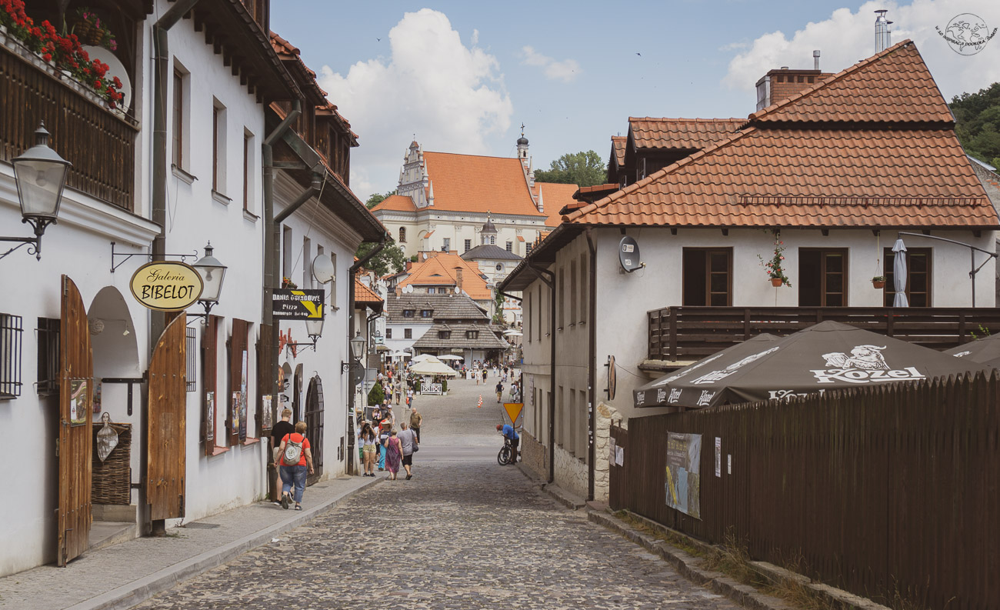
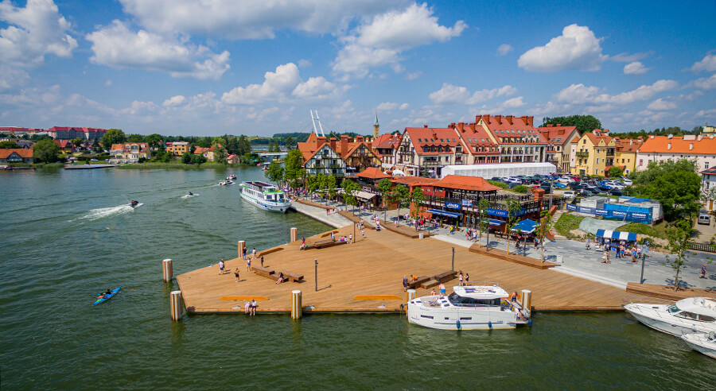
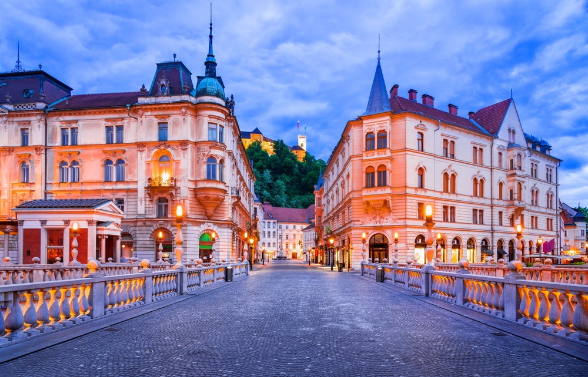
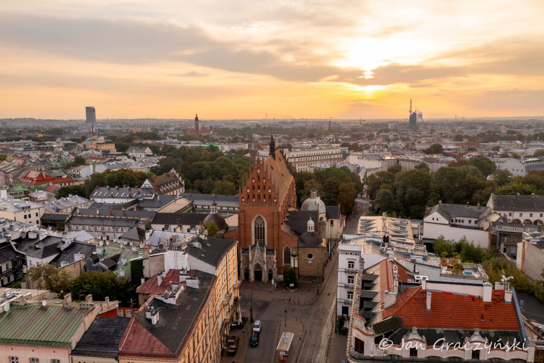
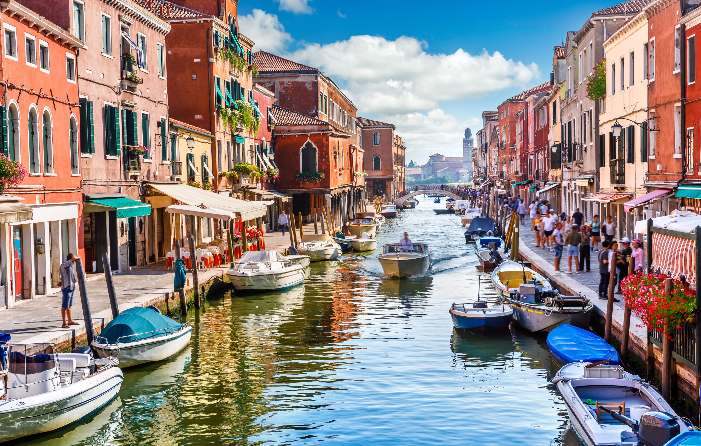
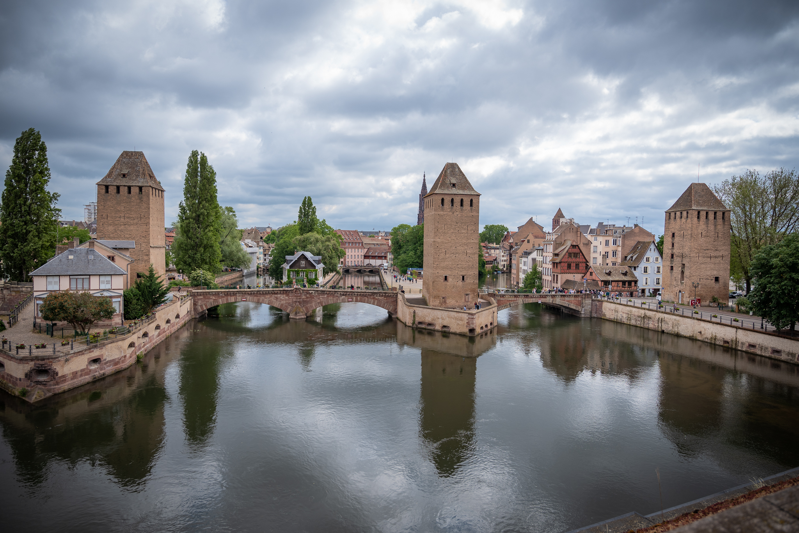

| 
Kazimierz Dolny Kazimierz leży w województwie lubelskim, w powiacie puławskim, nad Wisła w zachodzniej części Płaskowyżu Nałęczkowskiego. Jest bardzo popularnym miejscem o wybitnych walorach turystyczno-wypoczynkowych |

Mikołajki Mikołajki, często określane żeglarską stolicą Mazur, ściągają do siebie przede wysztkim amatorów sportów wodnych. Ta niewielka miejscowość leży nad Jeziorem Mikołajkowym stanowiącym odnogę największego z Jeziorem mazurskich - jeziora Śniardwy. |

Lublana Lublana jest stolicą Słowenii, położoną na rzeką Lublana. To niewielkie, bo liczące zaledwie 266 tysięcy mieszkańców, miasto to miejsce tłumnie odwiedzane przez turystów. |
|

Kraków Kraków to miasto o tysiącletniej historii, dawna siedziba królów polskich i stolica kraju. Krakowskie Stare miasto jest wyjątkową skarbnicą dzieł sztuki, pamiątek historycznych i zabytków, które reprezentują niemal wszystkie style archtektoniczne |

Wenecja Wenecja to miasto położone na licznych bagnistych wyspach na Morzu Adrityckim. Wokół Wenecji znajduje się Laguna Wenecka wpisana na Listę Światowego Dziedzictwa Kulturowego i Przyrodniczego UNESCO. |

Strasburg Strasburg jest stolicą i głównym ośrodkiem gospodarczym Alzacji. Od 1949 mieści się tu siedziba Rady Europy, a od 1979 - Parlamentu Europejskiego. |